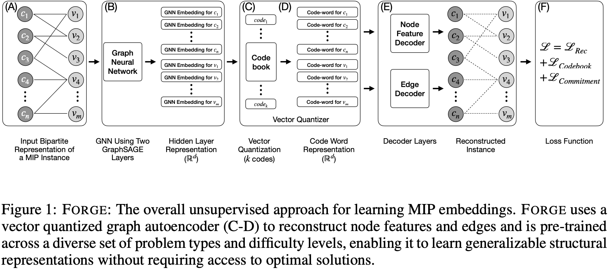
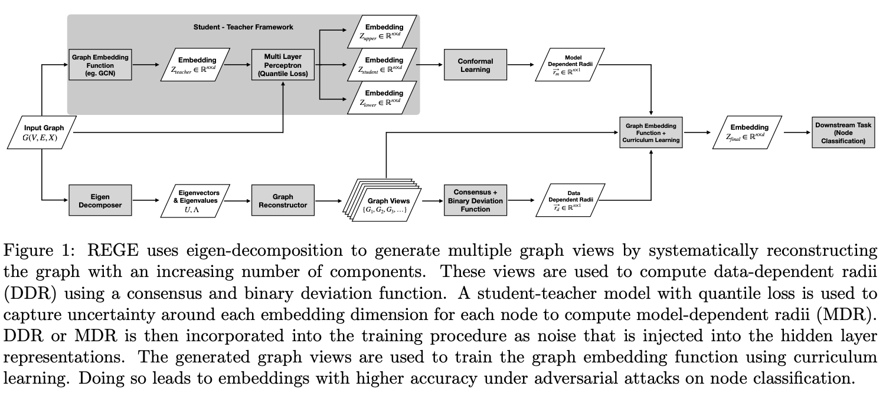
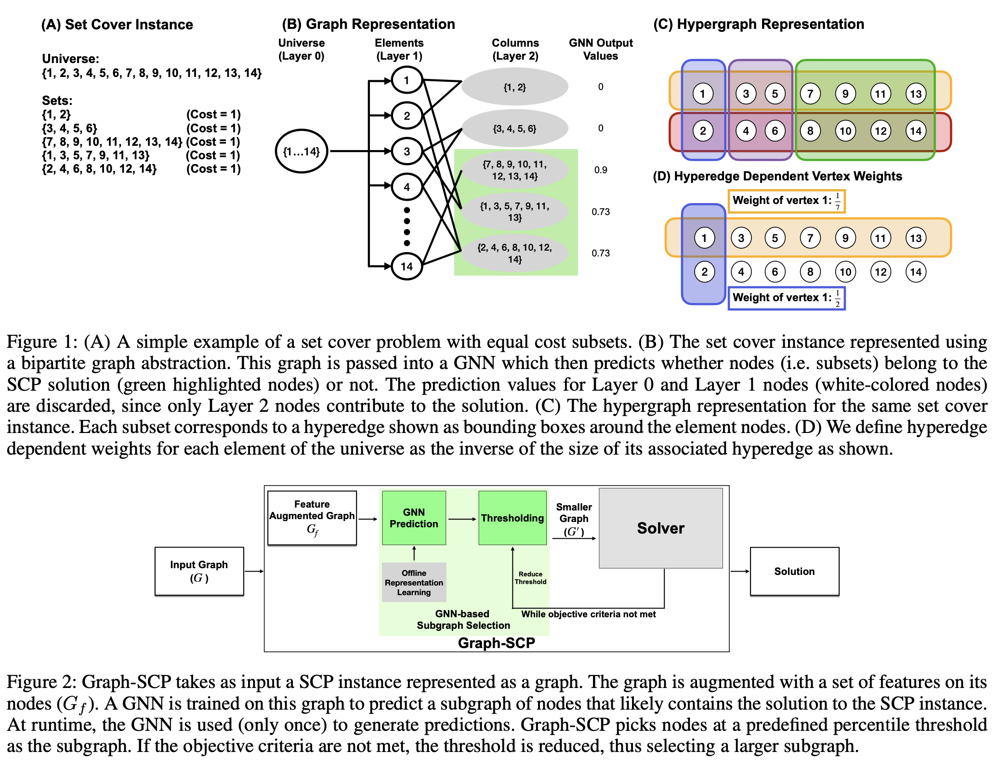
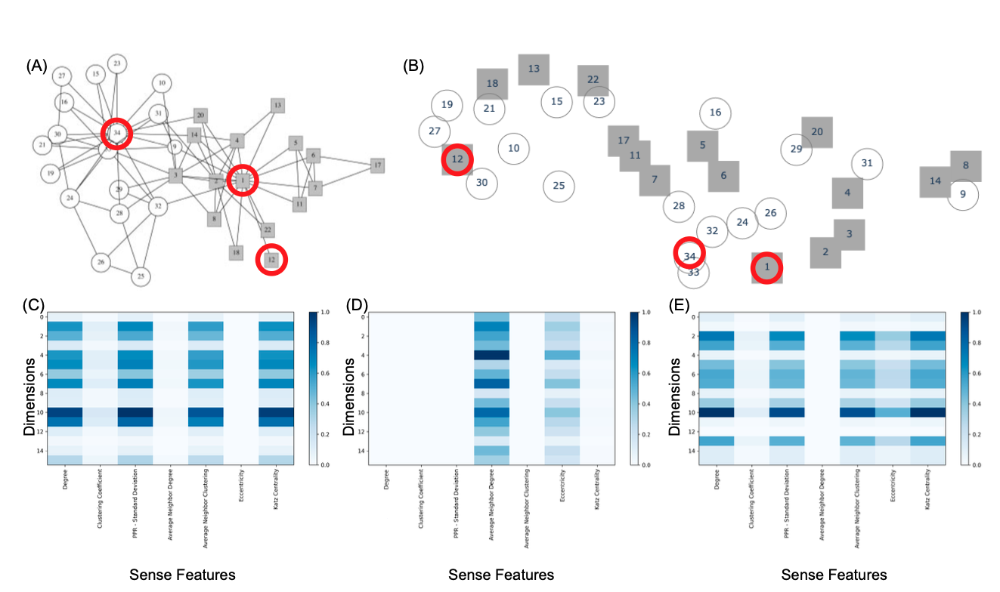
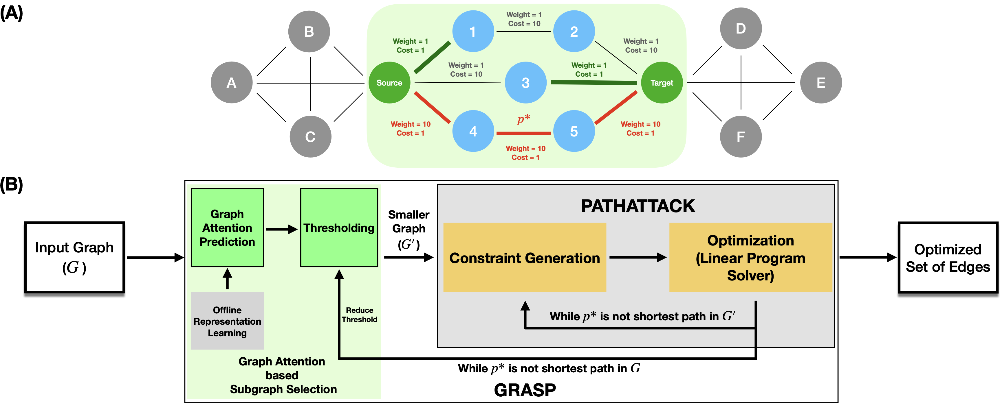
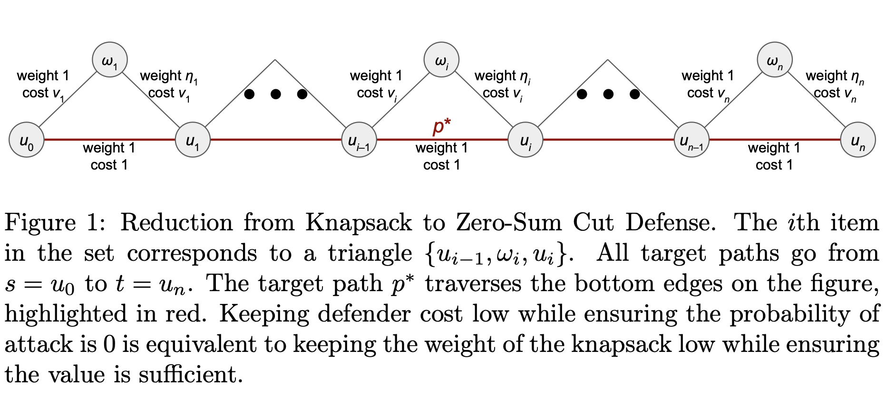
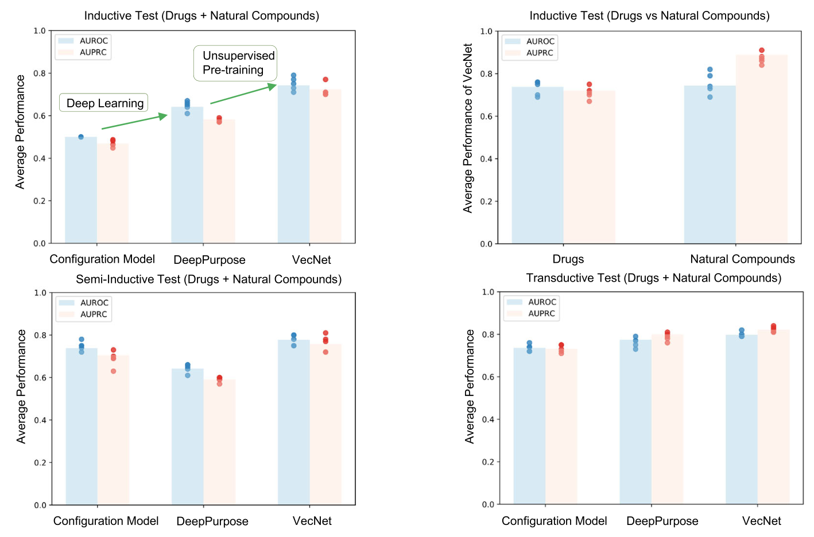
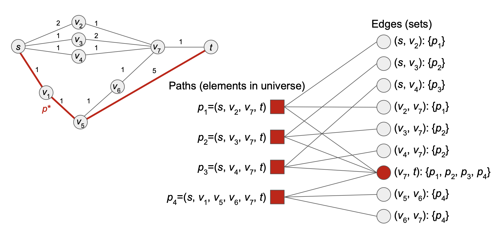
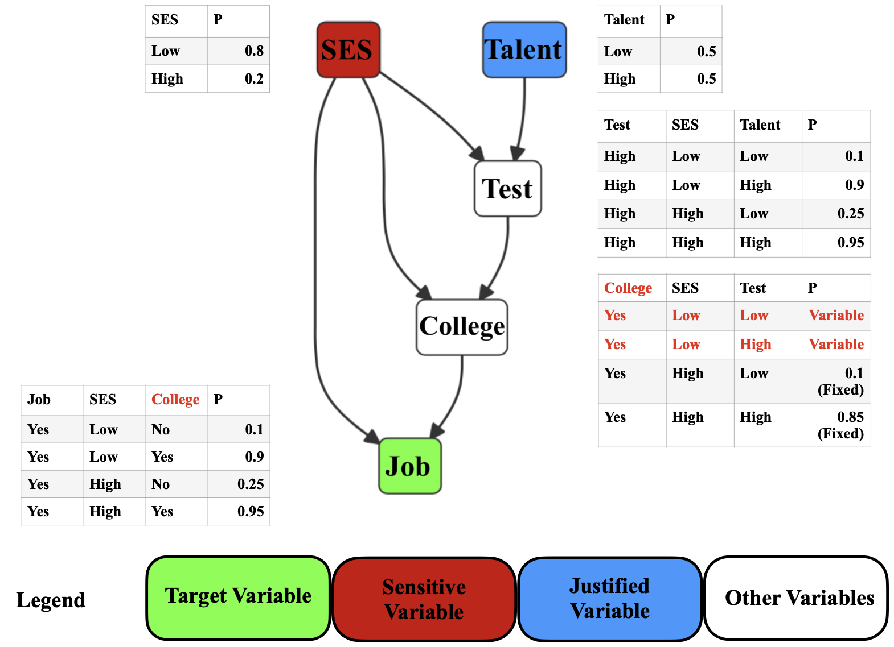

FORGE: Foundational Optimization Representations from Graph Embeddings
(DiffCOAlg @ NeurIPS 2025)
Zohair Shafi, Serdar Kadioglu
Abstract
Combinatorial optimization problems are ubiquitous in science and engineering, yet learning-based approaches to accelerate their solution often require solving a large number of hard-to-solve optimization instances to collect training data, incurring significant computational overhead. Existing methods require training dedicated models for each problem distribution for each downstream task, severely limiting their scalability and generalization. In this work, we introduce Forge, a method of pre-training a vector-quantized graph autoencoder on a large and diverse collection of mixed-integer programming (MIP) instances in an unsupervised fashion without dependency on their solution. The vector quantization process creates discrete code assignments that act as a vocabulary to represent optimization instances. We evaluate our approach under both supervised and unsupervised settings. For the unsupervised setting, we demonstrate that Forge embeddings effectively differentiate and cluster unseen instances. For the supervised setting, we fine-tune Forge embeddings and show that a single model predicts both the variables for warm-starts and integrality gaps for cut-generation across multiple problem type distributions. Both predictions help improve performance of a state-of-the-art, commercial optimization solver.
Resources [code][slides]

REGE: A Method for Incorporating Uncertainty in Graph Embeddings
(SDM 2025)
Zohair Shafi, Germans Savcisens, Tina Eliassi-Rad
Abstract
Machine learning models for graphs in real-world applications are prone to two primary types of uncertainty: (1) those that arise from incomplete and noisy data and (2) those that arise from uncertainty of the model in its output. These sources of uncertainty are not mutually exclusive. Additionally, models are susceptible to targeted adversarial attacks, which exacerbate both of these uncertainties. In this work, we introduce Radius Enhanced Graph Embeddings (REGE), an approach that measures and incorporates uncertainty in data to produce graph embeddings with radius values that represent the uncertainty of the model's output. REGE employs curriculum learning to incorporate data uncertainty and conformal learning to address the uncertainty in the model's output. In our experiments, we show that REGE's graph embeddings perform better under adversarial attacks by an average of 1.5% (accuracy) against state-of-the-art methods.
Resources [code][slides]

Accelerated Discovery of Set Cover Solutions via Graph Neural Networks
(CPAIOR 2025)
Zohair Shafi, Benjamin A Miller, Tina Eliassi-Rad, Rajmonda S. Caceres
Abstract
Machine learning (ML) approaches are increasingly being used to accelerate combinatorial optimization (CO) problems. We look specifically at the Set Cover Problem (SCP) and propose Graph-SCP, a graph neural network method that can augment existing optimization solvers by learning to identify a much smaller sub-problem that contains the solution space. We evaluate the performance of Graph-SCP on synthetic weighted and unweighted SCP instances with diverse problem characteristics and complexities, and on instances from the OR Library, a canonical benchmark for SCP. We show that Graph-SCP reduces the problem size by 30-70% and achieves run time speedups up to ~25x when compared to commercial solvers (Gurobi). Given a desired optimality threshold, Graph-SCP will improve upon it or even achieve 100% optimality. This is in contrast to fast greedy solutions that significantly compromise solution quality to achieve guaranteed polynomial run time. Graph-SCP can generalize to larger problem sizes and can be used with other conventional or ML-augmented CO solvers to lead to potential additional run time improvement.
Resources [code][slides]

Explaining Node Embeddings
(TMLR 2025)
Zohair Shafi, Ayan Chatterjee, Tina Eliassi-Rad
Abstract
Node embedding algorithms produce low-dimensional latent representations of nodes in a graph. These embeddings are often used for downstream tasks, such as node classification and link prediction. In this paper, we investigate the following two questions: (Q1) Can we explain each embedding dimension with human-understandable graph features (e.g. degree, clustering coefficient and PageRank). (Q2) How can we modify existing node embedding algorithms to produce embeddings that can be easily explained by human-understandable graph features? We find that the answer to Q1 is yes and introduce a new framework called XM (short for eXplain eMbedding) to answer Q2. A key aspect of XM involves minimizing the nuclear norm of the generated explanations. We show that by minimizing the nuclear norm, we minimize the lower bound on the entropy of the generated explanations. We test XM on a variety of real-world graphs and show that XM not only preserves the performance of existing node embedding methods, but also enhances their explainability.
Resources [code]

GRASP: Accelerating Shortest Path Attacks via Graph Attention
(Deep Learning on Graphs Workshop - KDD 2023)
Zohair Shafi, Benjamin A Miller, Ayan Chatterjee, Tina Eliassi-Rad, Rajmonda S. Caceres
Abstract
Recent advances in machine learning (ML) have shown promise in aiding and accelerating classical combinatorial optimization algorithms. ML-based speed ups that aim to learn in an end to end manner (i.e., directly output the solution) tend to trade off run time with solution quality. Therefore, solutions that are able to accelerate existing solvers while maintaining their performance guarantees, are of great interest. We consider an APX-hard problem, where an adversary aims to attack shortest paths in a graph by removing the minimum number of edges. We propose the GRASP algorithm: Graph Attention Accelerated Shortest Path Attack, an ML aided optimization algorithm that achieves run times up to 10x faster, while maintaining the quality of solution generated. GRASP uses a graph attention network to identify a smaller subgraph containing the combinatorial solution, thus effectively reducing the input problem size. Additionally, we demonstrate how careful representation of the input graph, including node features that correlate well with the optimization task, can highlight important structure in the optimization solution.

Defense Against Shortest Path Attacks
(SDM 2025)
Benjamin A Miller, Zohair Shafi, Wheeler Ruml, Yevgeniy Vorobeychik, Tina Eliassi-Rad, Scott Alfeld
Abstract Identifying shortest paths between nodes in a network is an important task in applications involving routing of resources. Recent work has shown that a malicious actor can manipulate a graph to make traffic between two nodes of interest follow their target path. In this paper, we develop a defense against such attacks by modifying the weights of the graph that users observe. The defender must balance inhibiting the attacker against any negative effects of the defense on benign users. Specifically, the defender's goals are: (a) to recommend the shortest paths possible to users, (b) for the lengths of the shortest paths in the published graph to be close to those of the same paths in the true graph, and (c) to minimize the probability of an attack. We formulate the defense as a Stackelberg game in which the defender is the leader and the attacker is the follower. In this context, we also consider a zero-sum version of the game, in which the defender's goal is to minimize cost while achieving the minimum possible attack probability. We show that this problem is NP-hard and propose heuristic solutions based on increasing edge weights along target paths in both the zero-sum and non-zero-sum settings. Relaxing some constraints of the original problem, we formulate a linear program for local optimization around a feasible point. We present defense results with both synthetic and real network datasets and show that these methods often reach the lower bound of the defender's cost.

Improving the Generalizability of Protein-Ligand Binding Predictions with AI-Bind
(Nature Communications 2023)
Ayan Chatterjee, Robin Walters, Zohair Shafi, Omair Shafi Ahmed, Michael Sebek, Deisy Gysi, Rose Yu, Tina Eliassi-Rad, Albert-László Barabási, Giulia Menichetti
Abstract Identifying novel drug-target interactions is a critical and rate-limiting step in drug discovery. While deep learning models have been proposed to accelerate the identification process, here we show that state-of-the-art models fail to generalize to novel (i.e., never-before-seen) structures. We unveil the mechanisms responsible for this shortcoming, demonstrating how models rely on shortcuts that leverage the topology of the protein-ligand bipartite network, rather than learning the node features. Here we introduce AI-Bind, a pipeline that combines network-based sampling strategies with unsupervised pre-training to improve binding predictions for novel proteins and ligands. We validate AI-Bind predictions via docking simulations and comparison with recent experimental evidence, and step up the process of interpreting machine learning prediction of protein-ligand binding by identifying potential active binding sites on the amino acid sequence. AI-Bind is a high-throughput approach to identify drug-target combinations with the potential of becoming a powerful tool in drug discovery.
Resources [code]

Attacking Shortest Paths by Cutting Edges
(ACM TKDD 2023)
Benjamin A Miller, Zohair Shafi, Wheeler Ruml, Yevgeniy Vorobeychik, Tina Eliassi-Rad, Scott Alfeld
Abstract Identifying shortest paths between nodes in a network is a common graph analysis problem that is important for many applications involving routing of resources. An adversary that can manipulate the graph structure could alter traffic patterns to gain some benefit (e.g., make more money by directing traffic to a toll road). This article presents the Force Path Cut problem, in which an adversary removes edges from a graph to make a particular path the shortest between its terminal nodes. We prove that the optimization version of this problem is APX-hard but introduce PATHATTACK, a polynomial-time approximation algorithm that guarantees a solution within a logarithmic factor of the optimal value. In addition, we introduce the Force Edge Cut and Force Node Cut problems, in which the adversary targets a particular edge or node, respectively, rather than an entire path. We derive a nonconvex optimization formulation for these problems and derive a heuristic algorithm that uses PATHATTACK as a subroutine. We demonstrate all of these algorithms on a diverse set of real and synthetic networks, illustrating where the proposed algorithms provide the greatest improvement over baseline methods.
Resources [code]
Related Work
PATHATTACK: Attacking Shortest Paths in Complex Networks (ECML PKDD 2021) [paper]
Benjamin A Miller, Zohair Shafi, Wheeler Ruml, Yevgeniy Vorobeychik, Tina Eliassi-Rad, Scott Alfeld
Optimal Edge Weight Perturbations to Attack Shortest Paths (arXiv 2021) [paper]
Benjamin A Miller, Zohair Shafi, Wheeler Ruml, Yevgeniy Vorobeychik, Tina Eliassi-Rad, Scott Alfeld

RAWLSNET: Altering Bayesian Networks to Encode Rawlsian Fair Equality of Opportunity
(AIES 2021)
David Liu*, Zohair Shafi*, William Fleisher, Tina Eliassi-Rad, Scott Alfeld
Abstract We present RAWLSNET, a system for altering Bayesian Network (BN) models to satisfy the Rawlsian principle of fair equality of opportunity (FEO). RAWLSNET’s BN models generate aspirational data distributions: data generated to reflect an ideally fair, FEO-satisfying society. FEO states that everyone with the same talent and willingness to use it should have the same chance of achieving advantageous social positions (e.g., employment), regardless of their background circumstances (e.g., socioeconomic status). Satisfying FEO requires alterations to social structures such as school assignments. Our paper describes RAWLSNET, a method which takes as input a BN representation of an FEO application and alters the BN’s parameters so as to satisfy FEO when possible, and minimize deviation from FEO otherwise. We also offer guidance for applying RAWLSNET, including on recognizing proper applications of FEO. We demonstrate the use of RAWLSNET with publicly available data sets. RAWLSNET’s altered BNs offer the novel capability of generating aspirational data for FEO-relevant tasks. Aspirational data are free from biases of real-world data, and thus are useful for recognizing and detecting sources of unfairness in machine learning algorithms besides biased data.
Resources [code] [video]